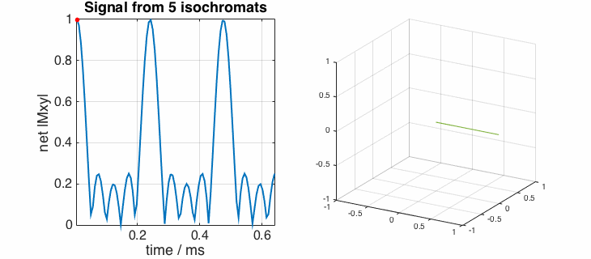
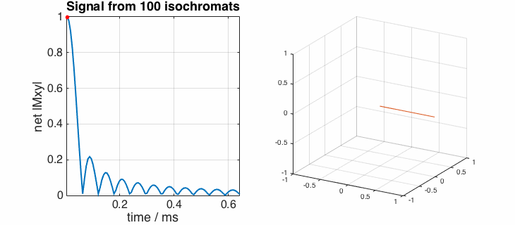
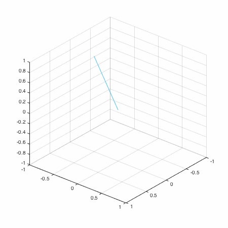
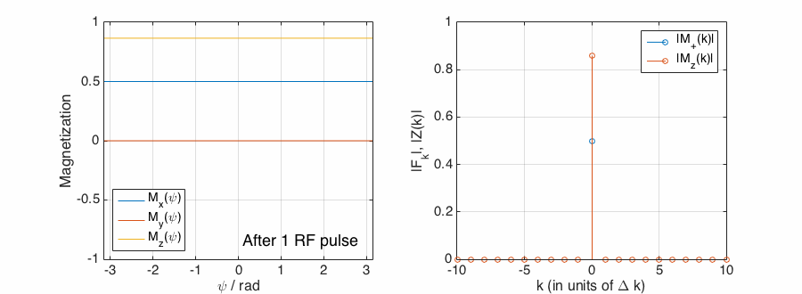

# RF pulse design and simulations: supplementary animations
### Isochromat ensembles
A simple sequence of RF and gradient pulses, just one isochromat:
<img src="images/iso_sim_3d_1_isochroms.gif" width="70%">
A single isochromat can't characterise the system because in reality we have a
continuous distribution of magnetization at different frequencies. Here's the
same sequence with 100 isochromats:
<img src="images/iso_sim_3d_100_isochroms.gif" width="70%">
### Simulation of the effect of a single gradient
Simulate transverse magnetization when a gradient is applied.
First using 5 isochromats:

You see that there are **spurious echoes** when all the magnetisation vectors are aligned. This is unphysical, and these disappear when the number of isochromats is increased. For example, using 100 isochromats:

### Isochromat simulations including relaxation
Below is the behaviour of 100 isochromats during a gradient echo sequence
without RF spoiling (i.e. spoiling phase = 0) for flip angle 30 degrees, TR=20ms, T1=1000ms and T2=100ms:

The magnetisation reaches a steady state but note that the transverse magnetization
doesn't disappear after each pulse. The steady state doesn't have the properties
that would be predicted by the Ernst equation. Below is the same sequence but with
a shorter TR (5ms) - the dynamics are clearer here because relaxation is less (i.e. the
lengths of the magnetization vectors don't get so small):
We can reduce the effect of coherent addition of transverse magnetization by
using quadratic phase cycling, here shown for 117 degrees. Firstly with the longer TR=20ms:
and now with the shorter TR=5ms:
### EPG representation
Magnetisation as a function of space (gradient induced phase offset) and then also as a function of k - the Fourier conjugate variable. This is a simple sequence of RF pulses and gradients

As time goes by, the number of non-zero Fourier terms needed to describe the magnetisation increases. This is because each successive gradient period adds new k-space terms to the mix.